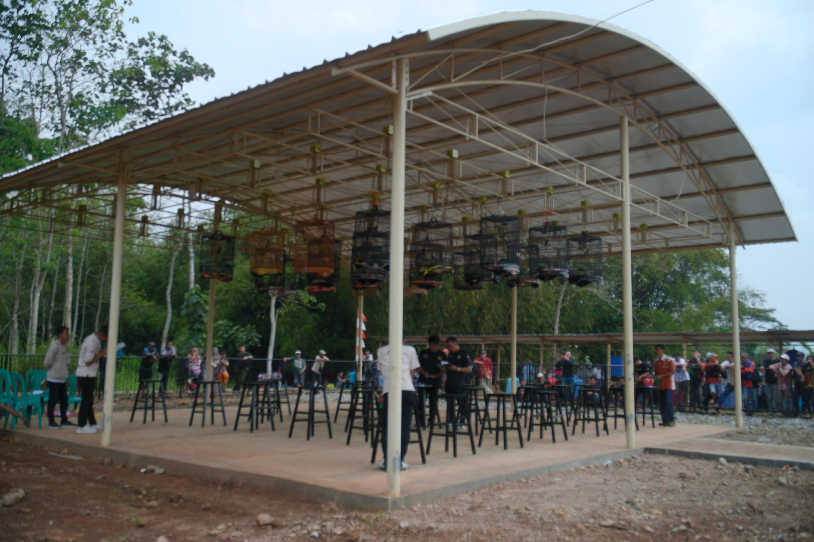

Mengenal lebih dekat potensi, kehidupan masyarakat, serta kekayaan kerajinan anyaman bambu Desa Mekarsari, Kecamatan Selaawi, Kabupaten Garut.
Desa Mekarsari merupakan salah satu desa di Kecamatan Selaawi, Kabupaten Garut, Jawa Barat. Desa ini memiliki potensi masyarakat yang beragam, mulai dari kehidupan sosial budaya hingga kegiatan ekonomi kreatif.
Salah satu potensi unggulannya adalah kerajinan anyaman bambu yang menjadi bagian dari aktivitas dan keterampilan masyarakat secara turun-temurun.
Pelajari Profil Desa